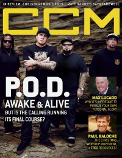

CCM Digital, 15 Nov 2015
| Cover |
|---|
|  |
 Online Exclusively Online Exclusively |
| Writers in this Issue |
| Argyrakis, Andy Conner, Matt Lusk, Caroline Riddle, Melissa Sparkman, Kevin Ziegler, Lena |
P.O.D.
Cover Feature:- "The Cost of the Crusade" by Lena Ziegler
- "Glory Days" by Caroline Lusk
- "Paul Baloche Aspires to Make Christmas a Season of Worship" by Melissa Chalos
- Natalie Grant - Be One by Matt Conner
- Chris Tomlin - Adore: Christmas Songs of Worship by Matt Conner
- Rend Collective Experiment - Campfire Christmas (Vol. 1) by Matt Conner
- Laura Story - God With Us by Andy Argyrakis
- Kim Walker-Smith - When Christmas Comes by Matt Conner
- Danny Gokey - Christmas Is Here by Kevin Sparkman
- The Gaither Vocal Band - Christmas Collection by Andy Argyrakis
- Sanctus Real - Best Of by Kevin Sparkman
- Jordan Feliz - Beloved by Andy Argyrakis
- Jenny & Tyler - of This I'm Sure by Kevin Sparkman
Relevant Links
For more information about CCM Digital visit .This issue is available exclusively online.
© 2011 CMnexus. Last updated September 2019. Contact: editor -AT- cmnexus -DØT- org About